NetworkDraft.md
1. 计算机网络概述¶
1.1. 基本术语¶
- 结点 （node） ：网络中的结点可以是计算机，集线器，交换机或路由器等。
- 链路（link ） : 从一个结点到另一个结点的一段物理线路。中间没有任何其他交点。
- 主机（host） ：连接在因特网上的计算机。
- ISP（Internet Service Provider） ：因特网服务提供者（提供商）。
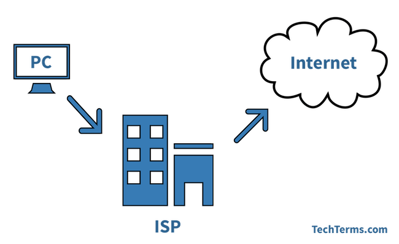
- IXP（Internet eXchange Point） ： 互联网交换点 IXP 的主要作用就是允许两个网络直接相连并交换分组，而不需要再通过第三个网络来转发分组。
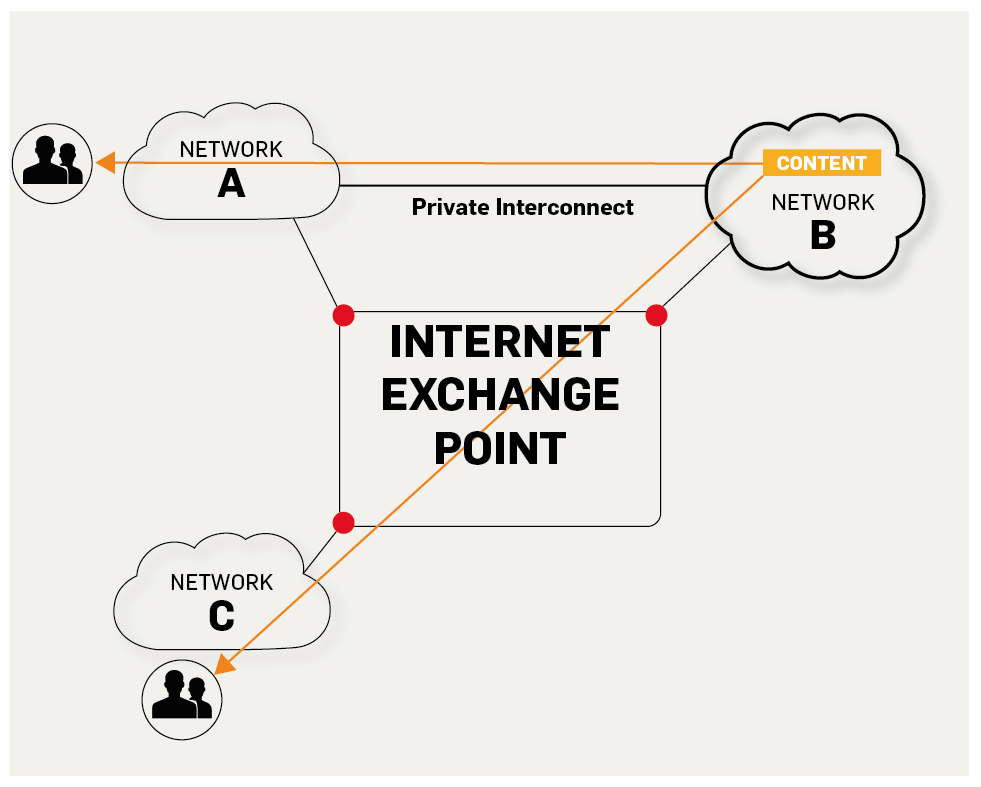
https://labs.ripe.net/Members/fergalc/ixp-traffic-during-stratos-skydive
- RFC(Request For Comments) ：意思是“请求评议”，包含了关于 Internet 几乎所有的重要的文字资料。
- 广域网 WAN（Wide Area Network） ：任务是通过长距离运送主机发送的数据。
- 城域网 MAN（Metropolitan Area Network）：用来将多个局域网进行互连。
- 局域网 LAN（Local Area Network） ： 学校或企业大多拥有多个互连的局域网。
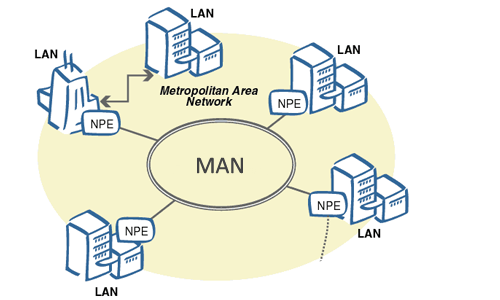
http://conexionesmanwman.blogspot.com/
- 个人区域网 PAN（Personal Area Network） ：在个人工作的地方把属于个人使用的电子设备用无线技术连接起来的网络 。
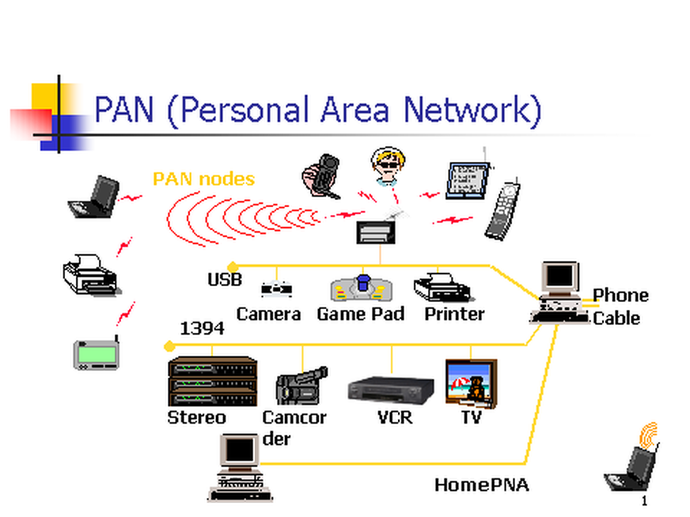
https://www.itrelease.com/2018/07/advantages-and-disadvantages-of-personal-area-network-pan/
- 分组（packet ） ：因特网中传送的数据单元。由首部 header 和数据段组成。分组又称为包，首部可称为包头。
- 存储转发（store and forward ） ：路由器收到一个分组，先检查分组是否正确，并过滤掉冲突包错误。确定包正确后，取出目的地址，通过查找表找到想要发送的输出端口地址，然后将该包发送出去。

- 带宽（bandwidth） ：在计算机网络中，表示在单位时间内从网络中的某一点到另一点所能通过的“最高数据率”。常用来表示网络的通信线路所能传送数据的能力。单位是“比特每秒”，记为 b/s。
- 吞吐量（throughput ） ：表示在单位时间内通过某个网络（或信道、接口）的数据量。吞吐量更经常地用于对现实世界中的网络的一种测量，以便知道实际上到底有多少数据量能够通过网络。吞吐量受网络的带宽或网络的额定速率的限制。
1.2. 重要知识点总结¶
- 计算机网络（简称网络）把许多计算机连接在一起，而互联网把许多网络连接在一起，是网络的网络。
- 小写字母 i 开头的 internet（互联网）是通用名词，它泛指由多个计算机网络相互连接而成的网络。在这些网络之间的通信协议（即通信规则）可以是任意的。大写字母 I 开头的 Internet（互联网）是专用名词，它指全球最大的，开放的，由众多网络相互连接而成的特定的互联网，并采用 TCP/IP 协议作为通信规则，其前身为 ARPANET。Internet 的推荐译名为因特网，现在一般流行称为互联网。
- 路由器是实现分组交换的关键构件，其任务是转发收到的分组，这是网络核心部分最重要的功能。分组交换采用存储转发技术，表示把一个报文（要发送的整块数据）分为几个分组后再进行传送。在发送报文之前，先把较长的报文划分成为一个个更小的等长数据段。在每个数据端的前面加上一些由必要的控制信息组成的首部后，就构成了一个分组。分组又称为包。分组是在互联网中传送的数据单元，正是由于分组的头部包含了诸如目的地址和源地址等重要控制信息，每一个分组才能在互联网中独立的选择传输路径，并正确地交付到分组传输的终点。
- 互联网按工作方式可划分为边缘部分和核心部分。主机在网络的边缘部分，其作用是进行信息处理。由大量网络和连接这些网络的路由器组成核心部分，其作用是提供连通性和交换。
- 计算机通信是计算机中进程（即运行着的程序）之间的通信。计算机网络采用的通信方式是客户-服务器方式（C/S 方式）和对等连接方式（P2P 方式）。
- 客户和服务器都是指通信中所涉及的应用进程。客户是服务请求方，服务器是服务提供方。
- 按照作用范围的不同，计算机网络分为广域网 WAN，城域网 MAN，局域网 LAN，个人区域网 PAN。
- 计算机网络最常用的性能指标是：速率，带宽，吞吐量，时延（发送时延，处理时延，排队时延），时延带宽积，往返时间和信道利用率。
- 网络协议即协议，是为进行网络中的数据交换而建立的规则。计算机网络的各层以及其协议集合，称为网络的体系结构。
- 五层体系结构由应用层，运输层，网络层（网际层），数据链路层，物理层组成。运输层最主要的协议是 TCP 和 UDP 协议，网络层最重要的协议是 IP 协议。

下面的内容会介绍计算机网络的五层体系结构：物理层+数据链路层+网络层（网际层）+运输层+应用层。
2. 物理层（Physical Layer）¶
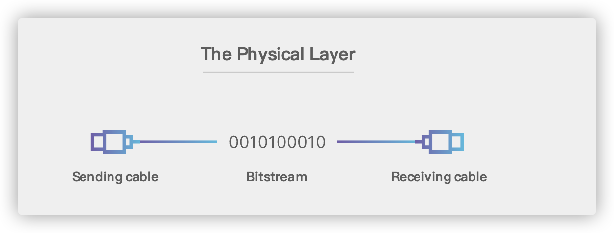
2.1. 基本术语¶
- 数据（data） :运送消息的实体。
- 信号（signal） ：数据的电气的或电磁的表现。或者说信号是适合在传输介质上传输的对象。
- 码元（ code） ：在使用时间域（或简称为时域）的波形来表示数字信号时，代表不同离散数值的基本波形。
- 单工（simplex ） : 只能有一个方向的通信而没有反方向的交互。
- 半双工（half duplex ） ：通信的双方都可以发送信息，但不能双方同时发送(当然也就不能同时接收)。
- 全双工（full duplex） : 通信的双方可以同时发送和接收信息。
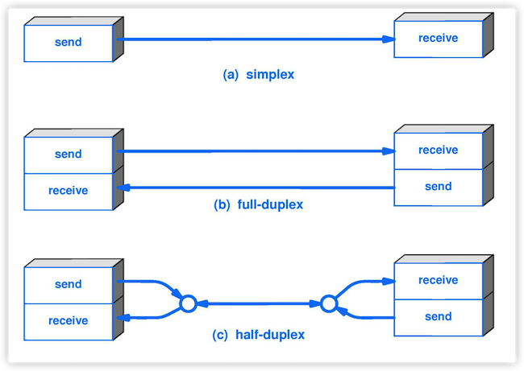
- 失真：失去真实性，主要是指接受到的信号和发送的信号不同，有磨损和衰减。影响失真程度的因素：1.码元传输速率 2.信号传输距离 3.噪声干扰 4.传输媒体质量

- 奈氏准则 : 在任何信道中，码元的传输的效率是有上限的，传输速率超过此上限，就会出现严重的码间串扰问题，使接收端对码元的判决（即识别）成为不可能。
- 香农定理 ：在带宽受限且有噪声的信道中，为了不产生误差，信息的数据传输速率有上限值。
- 基带信号（baseband signal） : 来自信源的信号。指没有经过调制的数字信号或模拟信号。
- 带通（频带）信号（bandpass signal） ：把基带信号经过载波调制后，把信号的频率范围搬移到较高的频段以便在信道中传输（即仅在一段频率范围内能够通过信道），这里调制过后的信号就是带通信号。
- 调制（modulation ） : 对信号源的信息进行处理后加到载波信号上，使其变为适合在信道传输的形式的过程。
- 信噪比（signal-to-noise ratio ） : 指信号的平均功率和噪声的平均功率之比，记为 S/N。信噪比（dB）=10*log10（S/N）。
- 信道复用（channel multiplexing ） ：指多个用户共享同一个信道。（并不一定是同时）。
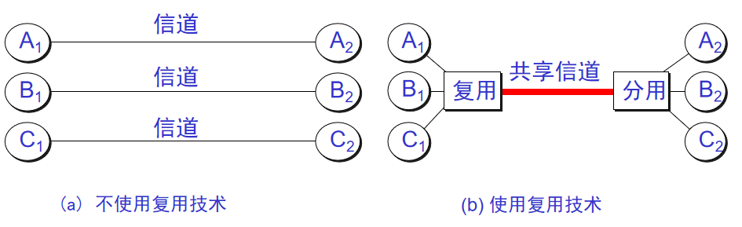
- 比特率（bit rate ） ：单位时间（每秒）内传送的比特数。
- 波特率（baud rate） ：单位时间载波调制状态改变的次数。针对数据信号对载波的调制速率。
- 复用（multiplexing） ：共享信道的方法。
- ADSL（Asymmetric Digital Subscriber Line ） ：非对称数字用户线。
- 光纤同轴混合网（HFC 网） :在目前覆盖范围很广的有线电视网的基础上开发的一种居民宽带接入网
2.2. 重要知识点总结¶
- 物理层的主要任务就是确定与传输媒体接口有关的一些特性，如机械特性，电气特性，功能特性，过程特性。
- 一个数据通信系统可划分为三大部分，即源系统，传输系统，目的系统。源系统包括源点（或源站，信源）和发送器，目的系统包括接收器和终点。
- 通信的目的是传送消息。如话音，文字，图像等都是消息，数据是运送消息的实体。信号则是数据的电器或电磁的表现。
- 根据信号中代表消息的参数的取值方式不同，信号可分为模拟信号（或连续信号）和数字信号（或离散信号）。在使用时间域（简称时域）的波形表示数字信号时，代表不同离散数值的基本波形称为码元。
- 根据双方信息交互的方式，通信可划分为单向通信（或单工通信），双向交替通信（或半双工通信），双向同时通信（全双工通信）。
- 来自信源的信号称为基带信号。信号要在信道上传输就要经过调制。调制有基带调制和带通调制之分。最基本的带通调制方法有调幅，调频和调相。还有更复杂的调制方法，如正交振幅调制。
- 要提高数据在信道上的传递速率，可以使用更好的传输媒体，或使用先进的调制技术。但数据传输速率不可能任意被提高。
- 传输媒体可分为两大类，即导引型传输媒体（双绞线，同轴电缆，光纤）和非导引型传输媒体（无线，红外，大气激光）。
- 了有效利用光纤资源，在光纤干线和用户之间广泛使用无源光网络 PON。无源光网络无需配备电源，其长期运营成本和管理成本都很低。最流行的无源光网络是以太网无源光网络 EPON 和吉比特无源光网络 GPON。
2.3. 补充¶
2.3.1. 物理层主要做啥？¶
物理层主要做的事情就是 透明地传送比特流。也可以将物理层的主要任务描述为确定与传输媒体的接口的一些特性，即：机械特性（接口所用接线器的一些物理属性如形状尺寸），电气特性（接口电缆的各条线上出现的电压的范围），功能特性（某条线上出现的某一电平的电压的意义），过程特性（对于不同功能能的各种可能事件的出现顺序）。
物理层考虑的是怎样才能在连接各种计算机的传输媒体上传输数据比特流，而不是指具体的传输媒体。 现有的计算机网络中的硬件设备和传输媒体的种类非常繁多，而且通信手段也有许多不同的方式。物理层的作用正是尽可能地屏蔽掉这些传输媒体和通信手段的差异，使物理层上面的数据链路层感觉不到这些差异，这样就可以使数据链路层只考虑完成本层的协议和服务，而不必考虑网络的具体传输媒体和通信手段是什么。
2.3.2. 几种常用的信道复用技术¶
- 频分复用(FDM) ：所有用户在同样的时间占用不同的带宽资源。
- 时分复用（TDM） ：所有用户在不同的时间占用同样的频带宽度（分时不分频）。
- 统计时分复用 (Statistic TDM) ：改进的时分复用，能够明显提高信道的利用率。
- 码分复用(CDM) ： 用户使用经过特殊挑选的不同码型，因此各用户之间不会造成干扰。这种系统发送的信号有很强的抗干扰能力，其频谱类似于白噪声，不易被敌人发现。
- 波分复用( WDM) ：波分复用就是光的频分复用。
2.3.3. 几种常用的宽带接入技术，主要是 ADSL 和 FTTx¶
用户到互联网的宽带接入方法有非对称数字用户线 ADSL（用数字技术对现有的模拟电话线进行改造，而不需要重新布线。ASDL 的快速版本是甚高速数字用户线 VDSL。），光纤同轴混合网 HFC（是在目前覆盖范围很广的有线电视网的基础上开发的一种居民宽带接入网）和 FTTx（即光纤到······）。
3. 数据链路层（Data Link Layer）¶
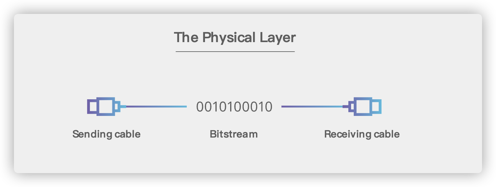
3.1. 基本术语¶
- 链路（link） ：一个结点到相邻结点的一段物理链路。
- 数据链路（data link） ：把实现控制数据运输的协议的硬件和软件加到链路上就构成了数据链路。
- 循环冗余检验 CRC（Cyclic Redundancy Check） ：为了保证数据传输的可靠性，CRC 是数据链路层广泛使用的一种检错技术。
- 帧（frame） ：一个数据链路层的传输单元，由一个数据链路层首部和其携带的封包所组成协议数据单元。
- MTU（Maximum Transfer Uint ） ：最大传送单元。帧的数据部分的的长度上限。
- 误码率 BER（Bit Error Rate ） ：在一段时间内，传输错误的比特占所传输比特总数的比率。
- PPP（Point-to-Point Protocol ） ：点对点协议。即用户计算机和 ISP 进行通信时所使用的数据链路层协议。以下是 PPP 帧的示意图：

- MAC 地址（Media Access Control 或者 Medium Access Control） ：意译为媒体访问控制，或称为物理地址、硬件地址，用来定义网络设备的位置。在 OSI 模型中，第三层网络层负责 IP 地址，第二层数据链路层则负责 MAC 地址。因此一个主机会有一个 MAC 地址，而每个网络位置会有一个专属于它的 IP 地址 。地址是识别某个系统的重要标识符，“名字指出我们所要寻找的资源，地址指出资源所在的地方，路由告诉我们如何到达该处。
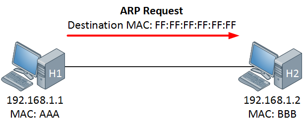
- 网桥（bridge） ：一种用于数据链路层实现中继，连接两个或多个局域网的网络互连设备。
- 交换机（switch ） ：广义的来说，交换机指的是一种通信系统中完成信息交换的设备。这里工作在数据链路层的交换机指的是交换式集线器，其实质是一个多接口的网桥
3.2. 重要知识点总结¶
- 链路是从一个结点到相邻节点的一段物理链路，数据链路则在链路的基础上增加了一些必要的硬件（如网络适配器）和软件（如协议的实现）
- 数据链路层使用的主要是点对点信道和广播信道两种。
- 数据链路层传输的协议数据单元是帧。数据链路层的三个基本问题是：封装成帧，透明传输和差错检测
- 循环冗余检验 CRC 是一种检错方法，而帧检验序列 FCS 是添加在数据后面的冗余码
- 点对点协议 PPP 是数据链路层使用最多的一种协议，它的特点是：简单，只检测差错而不去纠正差错，不使用序号，也不进行流量控制，可同时支持多种网络层协议
- PPPoE 是为宽带上网的主机使用的链路层协议
- 局域网的优点是：具有广播功能，从一个站点可方便地访问全网；便于系统的扩展和逐渐演变；提高了系统的可靠性，可用性和生存性。
- 计算机与外接局域网通信需要通过通信适配器（或网络适配器），它又称为网络接口卡或网卡。计算器的硬件地址就在适配器的 ROM 中。
- 以太网采用的无连接的工作方式，对发送的数据帧不进行编号，也不要求对方发回确认。目的站收到有差错帧就把它丢掉，其他什么也不做
- 以太网采用的协议是具有冲突检测的载波监听多点接入 CSMA/CD。协议的特点是：发送前先监听，边发送边监听，一旦发现总线上出现了碰撞，就立即停止发送。然后按照退避算法等待一段随机时间后再次发送。 因此，每一个站点在自己发送数据之后的一小段时间内，存在这遭遇碰撞的可能性。以太网上的各站点平等的争用以太网信道
- 以太网的适配器具有过滤功能，它只接收单播帧，广播帧和多播帧。
- 使用集线器可以在物理层扩展以太网（扩展后的以太网仍然是一个网络）
3.3. 补充¶
- 数据链路层的点对点信道和广播信道的特点，以及这两种信道所使用的协议（PPP 协议以及 CSMA/CD 协议）的特点
- 数据链路层的三个基本问题：封装成帧，透明传输，差错检测
- 以太网的 MAC 层硬件地址
- 适配器，转发器，集线器，网桥，以太网交换机的作用以及适用场合
4. 网络层（Network Layer）¶
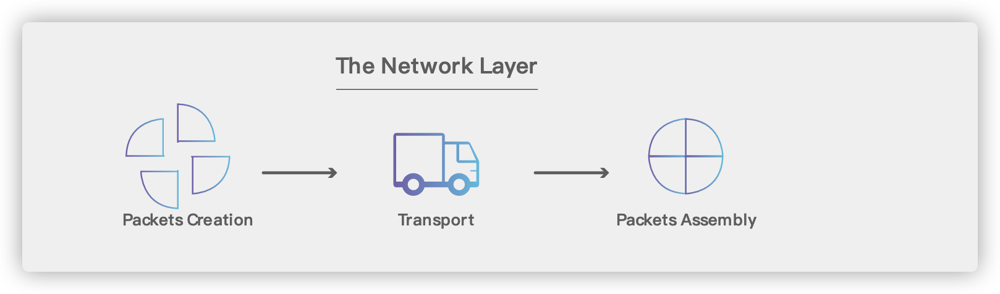
4.1. 基本术语¶
- 虚电路（Virtual Circuit） : 在两个终端设备的逻辑或物理端口之间，通过建立的双向的透明传输通道。虚电路表示这只是一条逻辑上的连接，分组都沿着这条逻辑连接按照存储转发方式传送，而并不是真正建立了一条物理连接。
- IP（Internet Protocol ） : 网际协议 IP 是 TCP/IP 体系中两个最主要的协议之一，是 TCP/IP 体系结构网际层的核心。配套的有 ARP，RARP，ICMP，IGMP。
- ARP（Address Resolution Protocol） : 地址解析协议。地址解析协议 ARP 把 IP 地址解析为硬件地址。
- ICMP（Internet Control Message Protocol ） ：网际控制报文协议 （ICMP 允许主机或路由器报告差错情况和提供有关异常情况的报告）。
- 子网掩码（subnet mask ） ：它是一种用来指明一个 IP 地址的哪些位标识的是主机所在的子网以及哪些位标识的是主机的位掩码。子网掩码不能单独存在，它必须结合 IP 地址一起使用。
- CIDR（ Classless Inter-Domain Routing ）：无分类域间路由选择 （特点是消除了传统的 A 类、B 类和 C 类地址以及划分子网的概念，并使用各种长度的“网络前缀”(network-prefix)来代替分类地址中的网络号和子网号）。
- 默认路由（default route） ：当在路由表中查不到能到达目的地址的路由时，路由器选择的路由。默认路由还可以减小路由表所占用的空间和搜索路由表所用的时间。
- 路由选择算法（Virtual Circuit） ：路由选择协议的核心部分。因特网采用自适应的，分层次的路由选择协议。
4.2. 重要知识点总结¶
- TCP/IP 协议中的网络层向上只提供简单灵活的，无连接的，尽最大努力交付的数据报服务。网络层不提供服务质量的承诺，不保证分组交付的时限所传送的分组可能出错，丢失，重复和失序。进程之间通信的可靠性由运输层负责
- 在互联网的交付有两种，一是在本网络直接交付不用经过路由器，另一种是和其他网络的间接交付，至少经过一个路由器，但最后一次一定是直接交付
- 分类的 IP 地址由网络号字段（指明网络）和主机号字段（指明主机）组成。网络号字段最前面的类别指明 IP 地址的类别。IP 地址是一种分等级的地址结构。IP 地址管理机构分配 IP 地址时只分配网络号，主机号由得到该网络号的单位自行分配。路由器根据目的主机所连接的网络号来转发分组。一个路由器至少连接到两个网络，所以一个路由器至少应当有两个不同的 IP 地址
- IP 数据报分为首部和数据两部分。首部的前一部分是固定长度，共 20 字节，是所有 IP 数据包必须具有的（源地址，目的地址，总长度等重要地段都固定在首部）。一些长度可变的可选字段固定在首部的后面。IP 首部中的生存时间给出了 IP 数据报在互联网中所能经过的最大路由器数。可防止 IP 数据报在互联网中无限制的兜圈子。
- 地址解析协议 ARP 把 IP 地址解析为硬件地址。ARP 的高速缓存可以大大减少网络上的通信量。因为这样可以使主机下次再与同样地址的主机通信时，可以直接从高速缓存中找到所需要的硬件地址而不需要再去广播方式发送 ARP 请求分组
- 无分类域间路由选择 CIDR 是解决目前 IP 地址紧缺的一个好办法。CIDR 记法把 IP 地址后面加上斜线“/”，然后写上前缀所所占的位数。前缀（或网络前缀用来指明网络），前缀后面的部分是后缀，用来指明主机。CIDR 把前缀都相同的连续的 IP 地址组成一个“CIDR 地址块”，IP 地址分配都以 CIDR 地址块为单位。
- 网际控制报文协议是 IP 层的协议。ICMP 报文作为 IP 数据报的数据，加上首部后组成 IP 数据报发送出去。使用 ICMP 数据报并不是为了实现可靠传输。ICMP 允许主机或路由器报告差错情况和提供有关异常情况的报告。ICMP 报文的种类有两种 ICMP 差错报告报文和 ICMP 询问报文。
- 要解决 IP 地址耗尽的问题，最根本的办法是采用具有更大地址空间的新版本 IP 协议-IPv6。 IPv6 所带来的变化有 ① 更大的地址空间（采用 128 位地址）② 灵活的首部格式 ③ 改进的选项 ④ 支持即插即用 ⑤ 支持资源的预分配 ⑥IPv6 的首部改为 8 字节对齐。
- 虚拟专用网络 VPN 利用公用的互联网作为本机构专用网之间的通信载体。VPN 内使用互联网的专用地址。一个 VPN 至少要有一个路由器具有合法的全球 IP 地址，这样才能和本系统的另一个 VPN 通过互联网进行通信。所有通过互联网传送的数据都需要加密。
- MPLS 的特点是：① 支持面向连接的服务质量 ② 支持流量工程，平衡网络负载 ③ 有效的支持虚拟专用网 VPN。MPLS 在入口节点给每一个 IP 数据报打上固定长度的“标记”，然后根据标记在第二层（链路层）用硬件进行转发（在标记交换路由器中进行标记交换），因而转发速率大大加快。
5. 传输层（Transport Layer）¶
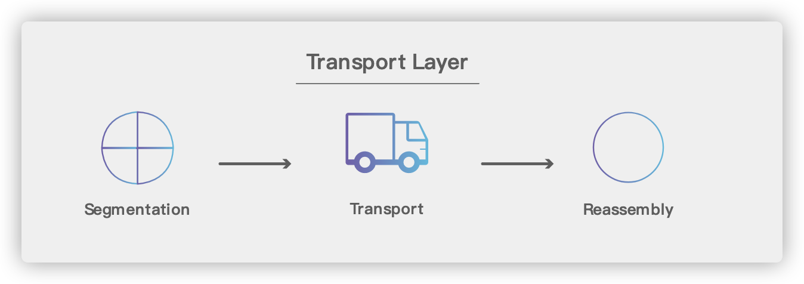
5.1. 基本术语¶
- 进程（process） ：指计算机中正在运行的程序实体。
- 应用进程互相通信 ：一台主机的进程和另一台主机中的一个进程交换数据的过程（另外注意通信真正的端点不是主机而是主机中的进程，也就是说端到端的通信是应用进程之间的通信）。
- 传输层的复用与分用 ：复用指发送方不同的进程都可以通过统一个运输层协议传送数据。分用指接收方的运输层在剥去报文的首部后能把这些数据正确的交付到目的应用进程。
- TCP（Transmission Control Protocol） ：传输控制协议。
- UDP（User Datagram Protocol） ：用户数据报协议。
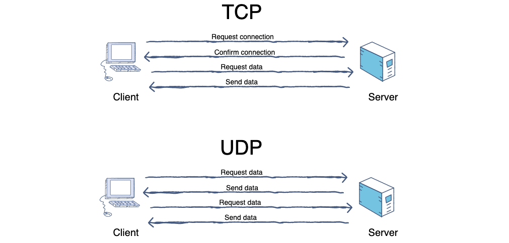
- 端口（port） ：端口的目的是为了确认对方机器是那个进程在于自己进行交互，比如 MSN 和 QQ 的端口不同，如果没有端口就可能出现 QQ 进程和 MSN 交互错误。端口又称协议端口号。
- 停止等待协议（stop-and-wait） ：指发送方每发送完一个分组就停止发送，等待对方确认，在收到确认之后在发送下一个分组。
- 流量控制 : 就是让发送方的发送速率不要太快，既要让接收方来得及接收，也不要使网络发生拥塞。
- 拥塞控制 ：防止过多的数据注入到网络中，这样可以使网络中的路由器或链路不致过载。拥塞控制所要做的都有一个前提，就是网络能够承受现有的网络负荷。
5.2. 重要知识点总结¶
-
运输层提供应用进程之间的逻辑通信，也就是说，运输层之间的通信并不是真正在两个运输层之间直接传输数据。运输层向应用层屏蔽了下面网络的细节（如网络拓补，所采用的路由选择协议等），它使应用进程之间看起来好像两个运输层实体之间有一条端到端的逻辑通信信道。
-
网络层为主机提供逻辑通信，而运输层为应用进程之间提供端到端的逻辑通信。
-
运输层的两个重要协议是用户数据报协议 UDP 和传输控制协议 TCP。按照 OSI 的术语，两个对等运输实体在通信时传送的数据单位叫做运输协议数据单元 TPDU（Transport Protocol Data Unit）。但在 TCP/IP 体系中，则根据所使用的协议是 TCP 或 UDP，分别称之为 TCP 报文段或 UDP 用户数据报。
-
UDP 在传送数据之前不需要先建立连接，远地主机在收到 UDP 报文后，不需要给出任何确认。虽然 UDP 不提供可靠交付，但在某些情况下 UDP 确是一种最有效的工作方式。 TCP 提供面向连接的服务。在传送数据之前必须先建立连接，数据传送结束后要释放连接。TCP 不提供广播或多播服务。由于 TCP 要提供可靠的，面向连接的传输服务，这一难以避免增加了许多开销，如确认，流量控制，计时器以及连接管理等。这不仅使协议数据单元的首部增大很多，还要占用许多处理机资源。
-
硬件端口是不同硬件设备进行交互的接口，而软件端口是应用层各种协议进程与运输实体进行层间交互的一种地址。UDP 和 TCP 的首部格式中都有源端口和目的端口这两个重要字段。当运输层收到 IP 层交上来的运输层报文时，就能够 根据其首部中的目的端口号把数据交付应用层的目的应用层。（两个进程之间进行通信不光要知道对方 IP 地址而且要知道对方的端口号(为了找到对方计算机中的应用进程)）
-
运输层用一个 16 位端口号标志一个端口。端口号只有本地意义，它只是为了标志计算机应用层中的各个进程在和运输层交互时的层间接口。在互联网的不同计算机中，相同的端口号是没有关联的。协议端口号简称端口。虽然通信的终点是应用进程，但只要把所发送的报文交到目的主机的某个合适端口，剩下的工作（最后交付目的进程）就由 TCP 和 UDP 来完成。
-
运输层的端口号分为服务器端使用的端口号（0~1023 指派给熟知端口，1024~49151 是登记端口号）和客户端暂时使用的端口号（49152~65535）
-
UDP 的主要特点是 ① 无连接 ② 尽最大努力交付 ③ 面向报文 ④ 无拥塞控制 ⑤ 支持一对一，一对多，多对一和多对多的交互通信 ⑥ 首部开销小（只有四个字段：源端口，目的端口，长度和检验和）
-
TCP 的主要特点是 ① 面向连接 ② 每一条 TCP 连接只能是一对一的 ③ 提供可靠交付 ④ 提供全双工通信 ⑤ 面向字节流
-
TCP 用主机的 IP 地址加上主机上的端口号作为 TCP 连接的端点。这样的端点就叫做套接字（socket）或插口。套接字用（IP 地址：端口号）来表示。每一条 TCP 连接唯一被通信两端的两个端点所确定。
-
停止等待协议是为了实现可靠传输的，它的基本原理就是每发完一个分组就停止发送，等待对方确认。在收到确认后再发下一个分组。
-
为了提高传输效率，发送方可以不使用低效率的停止等待协议，而是采用流水线传输。流水线传输就是发送方可连续发送多个分组，不必每发完一个分组就停下来等待对方确认。这样可使信道上一直有数据不间断的在传送。这种传输方式可以明显提高信道利用率。
-
停止等待协议中超时重传是指只要超过一段时间仍然没有收到确认，就重传前面发送过的分组（认为刚才发送过的分组丢失了）。因此每发送完一个分组需要设置一个超时计时器，其重转时间应比数据在分组传输的平均往返时间更长一些。这种自动重传方式常称为自动重传请求 ARQ。另外在停止等待协议中若收到重复分组，就丢弃该分组，但同时还要发送确认。连续 ARQ 协议可提高信道利用率。发送维持一个发送窗口，凡位于发送窗口内的分组可连续发送出去，而不需要等待对方确认。接收方一般采用累积确认，对按序到达的最后一个分组发送确认，表明到这个分组位置的所有分组都已经正确收到了。
-
TCP 报文段的前 20 个字节是固定的，后面有 4n 字节是根据需要增加的选项。因此，TCP 首部的最小长度是 20 字节。
-
TCP 使用滑动窗口机制。发送窗口里面的序号表示允许发送的序号。发送窗口后沿的后面部分表示已发送且已收到确认，而发送窗口前沿的前面部分表示不允许发送。发送窗口后沿的变化情况有两种可能，即不动（没有收到新的确认）和前移（收到了新的确认）。发送窗口的前沿通常是不断向前移动的。一般来说，我们总是希望数据传输更快一些。但如果发送方把数据发送的过快，接收方就可能来不及接收，这就会造成数据的丢失。所谓流量控制就是让发送方的发送速率不要太快，要让接收方来得及接收。
-
在某段时间，若对网络中某一资源的需求超过了该资源所能提供的可用部分，网络的性能就要变坏。这种情况就叫拥塞。拥塞控制就是为了防止过多的数据注入到网络中，这样就可以使网络中的路由器或链路不致过载。拥塞控制所要做的都有一个前提，就是网络能够承受现有的网络负荷。拥塞控制是一个全局性的过程，涉及到所有的主机，所有的路由器，以及与降低网络传输性能有关的所有因素。相反，流量控制往往是点对点通信量的控制，是个端到端的问题。流量控制所要做到的就是抑制发送端发送数据的速率，以便使接收端来得及接收。
-
为了进行拥塞控制，TCP 发送方要维持一个拥塞窗口 cwnd 的状态变量。拥塞控制窗口的大小取决于网络的拥塞程度，并且动态变化。发送方让自己的发送窗口取为拥塞窗口和接收方的接受窗口中较小的一个。
-
TCP 的拥塞控制采用了四种算法，即慢开始，拥塞避免，快重传和快恢复。在网络层也可以使路由器采用适当的分组丢弃策略（如主动队列管理 AQM），以减少网络拥塞的发生。
-
运输连接的三个阶段，即：连接建立，数据传送和连接释放。
-
主动发起 TCP 连接建立的应用进程叫做客户，而被动等待连接建立的应用进程叫做服务器。TCP 连接采用三报文握手机制。服务器要确认用户的连接请求，然后客户要对服务器的确认进行确认。
-
TCP 的连接释放采用四报文握手机制。任何一方都可以在数据传送结束后发出连接释放的通知，待对方确认后进入半关闭状态。当另一方也没有数据再发送时，则发送连接释放通知，对方确认后就完全关闭了 TCP 连接
5.3. 补充（重要）¶
以下知识点需要重点关注：
- 端口和套接字的意义
- UDP 和 TCP 的区别以及两者的应用场景
- 在不可靠的网络上实现可靠传输的工作原理，停止等待协议和 ARQ 协议
- TCP 的滑动窗口，流量控制，拥塞控制和连接管理
- TCP 的三次握手，四次挥手机制
6. 应用层（Application Layer）¶
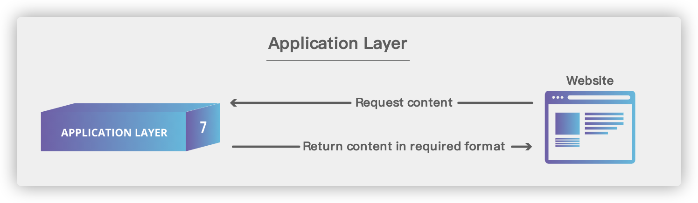
6.1. 基本术语¶
- 域名系统（DNS） ：域名系统（DNS，Domain Name System）将人类可读的域名 (例如，www.baidu.com) 转换为机器可读的 IP 地址 (例如，220.181.38.148)。我们可以将其理解为专为互联网设计的电话薄。
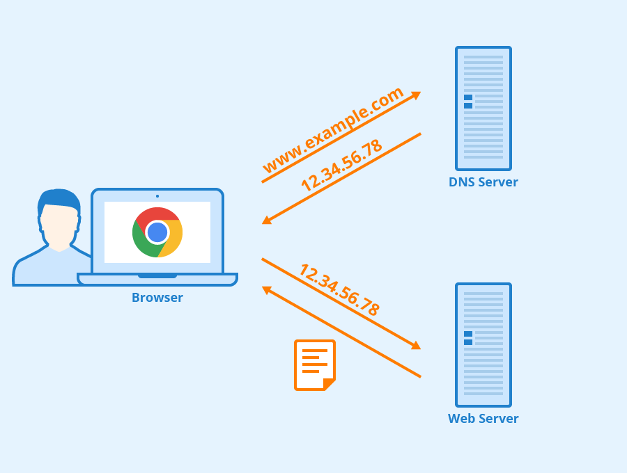
https://www.seobility.net/en/wiki/HTTP_headers
- 文件传输协议（FTP） ：FTP 是 File TransferProtocol（文件传输协议）的英文简称，而中文简称为“文传协议”。用于 Internet 上的控制文件的双向传输。同时，它也是一个应用程序（Application）。基于不同的操作系统有不同的 FTP 应用程序，而所有这些应用程序都遵守同一种协议以传输文件。在 FTP 的使用当中，用户经常遇到两个概念："下载"（Download）和"上传"（Upload）。 "下载"文件就是从远程主机拷贝文件至自己的计算机上；"上传"文件就是将文件从自己的计算机中拷贝至远程主机上。用 Internet 语言来说，用户可通过客户机程序向（从）远程主机上传（下载）文件。
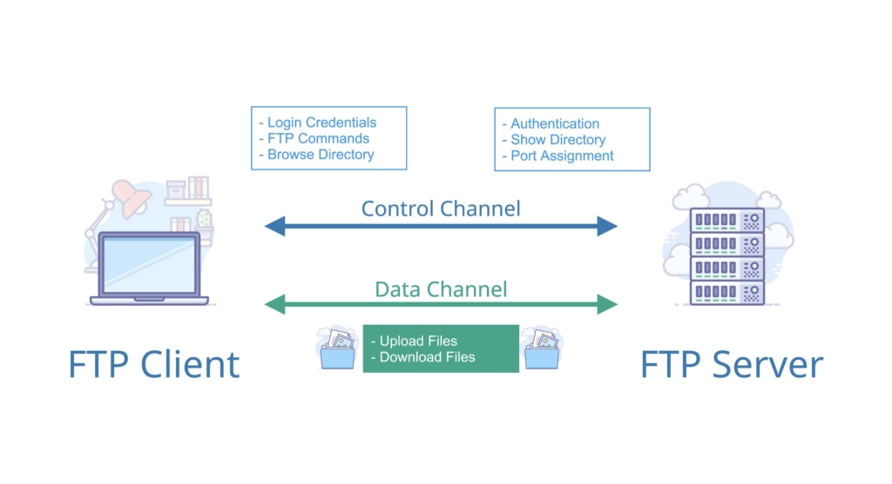
- 简单文件传输协议（TFTP） ：TFTP（Trivial File Transfer Protocol,简单文件传输协议）是 TCP/IP 协议族中的一个用来在客户机与服务器之间进行简单文件传输的协议，提供不复杂、开销不大的文件传输服务。端口号为 69。
- 远程终端协议（TELENET） ：Telnet 协议是 TCP/IP 协议族中的一员，是 Internet 远程登陆服务的标准协议和主要方式。它为用户提供了在本地计算机上完成远程主机工作的能力。在终端使用者的电脑上使用 telnet 程序，用它连接到服务器。终端使用者可以在 telnet 程序中输入命令，这些命令会在服务器上运行，就像直接在服务器的控制台上输入一样。可以在本地就能控制服务器。要开始一个 telnet 会话，必须输入用户名和密码来登录服务器。Telnet 是常用的远程控制 Web 服务器的方法。
- 万维网（WWW） ：WWW 是环球信息网的缩写，（亦作“Web”、“WWW”、“'W3'”，英文全称为“World Wide Web”），中文名字为“万维网”，"环球网"等，常简称为 Web。分为 Web 客户端和 Web 服务器程序。WWW 可以让 Web 客户端（常用浏览器）访问浏览 Web 服务器上的页面。是一个由许多互相链接的超文本组成的系统，通过互联网访问。在这个系统中，每个有用的事物，称为一样“资源”；并且由一个全局“统一资源标识符”（URI）标识；这些资源通过超文本传输协议（Hypertext Transfer Protocol）传送给用户，而后者通过点击链接来获得资源。万维网联盟（英语：World Wide Web Consortium，简称 W3C），又称 W3C 理事会。1994 年 10 月在麻省理工学院（MIT）计算机科学实验室成立。万维网联盟的创建者是万维网的发明者蒂姆·伯纳斯-李。万维网并不等同互联网，万维网只是互联网所能提供的服务其中之一，是靠着互联网运行的一项服务。
- 万维网的大致工作工程：

- 统一资源定位符（URL） ：统一资源定位符是对可以从互联网上得到的资源的位置和访问方法的一种简洁的表示，是互联网上标准资源的地址。互联网上的每个文件都有一个唯一的 URL，它包含的信息指出文件的位置以及浏览器应该怎么处理它。
- 超文本传输协议（HTTP） ：超文本传输协议（HTTP，HyperText Transfer Protocol)是互联网上应用最为广泛的一种网络协议。所有的 WWW 文件都必须遵守这个标准。设计 HTTP 最初的目的是为了提供一种发布和接收 HTML 页面的方法。1960 年美国人 Ted Nelson 构思了一种通过计算机处理文本信息的方法，并称之为超文本（hypertext）,这成为了 HTTP 超文本传输协议标准架构的发展根基。
HTTP 协议的本质就是一种浏览器与服务器之间约定好的通信格式。HTTP 的原理如下图所示：

- 代理服务器（Proxy Server） ： 代理服务器（Proxy Server）是一种网络实体，它又称为万维网高速缓存。 代理服务器把最近的一些请求和响应暂存在本地磁盘中。当新请求到达时，若代理服务器发现这个请求与暂时存放的的请求相同，就返回暂存的响应，而不需要按 URL 的地址再次去互联网访问该资源。代理服务器可在客户端或服务器工作，也可以在中间系统工作。
- 简单邮件传输协议(SMTP) : SMTP（Simple Mail Transfer Protocol）即简单邮件传输协议,它是一组用于由源地址到目的地址传送邮件的规则，由它来控制信件的中转方式。 SMTP 协议属于 TCP/IP 协议簇，它帮助每台计算机在发送或中转信件时找到下一个目的地。 通过 SMTP 协议所指定的服务器,就可以把 E-mail 寄到收信人的服务器上了，整个过程只要几分钟。SMTP 服务器则是遵循 SMTP 协议的发送邮件服务器，用来发送或中转发出的电子邮件。
https://www.campaignmonitor.com/resources/knowledge-base/what-is-the-code-that-makes-bcc-or-cc-operate-in-an-email/
11. **搜索引擎** :搜索引擎（Search Engine）是指根据一定的策略、运用特定的计算机程序从互联网上搜集信息，在对信息进行组织和处理后，为用户提供检索服务，将用户检索相关的信息展示给用户的系统。搜索引擎包括全文索引、目录索引、元搜索引擎、垂直搜索引擎、集合式搜索引擎、门户搜索引擎与免费链接列表等。 12. **垂直搜索引擎** ：垂直搜索引擎是针对某一个行业的专业搜索引擎，是搜索引擎的细分和延伸，是对网页库中的某类专门的信息进行一次整合，定向分字段抽取出需要的数据进行处理后再以某种形式返回给用户。垂直搜索是相对通用搜索引擎的信息量大、查询不准确、深度不够等提出来的新的搜索引擎服务模式，通过针对某一特定领域、某一特定人群或某一特定需求提供的有一定价值的信息和相关服务。其特点就是“专、精、深”，且具有行业色彩，相比较通用搜索引擎的海量信息无序化，垂直搜索引擎则显得更加专注、具体和深入。 13. **全文索引** :全文索引技术是目前搜索引擎的关键技术。试想在 1M 大小的文件中搜索一个词，可能需要几秒，在 100M 的文件中可能需要几十秒，如果在更大的文件中搜索那么就需要更大的系统开销，这样的开销是不现实的。所以在这样的矛盾下出现了全文索引技术，有时候有人叫倒排文档技术。 14. **目录索引** ：目录索引（ search index/directory)，顾名思义就是将网站分门别类地存放在相应的目录中，因此用户在查询信息时，可选择关键词搜索，也可按分类目录逐层查找。 ### 6.2. 重要知识点总结 1. 文件传输协议（FTP）使用 TCP 可靠的运输服务。FTP 使用客户服务器方式。一个 FTP 服务器进程可以同时为多个用户提供服务。在进进行文件传输时，FTP 的客户和服务器之间要先建立两个并行的 TCP 连接:控制连接和数据连接。实际用于传输文件的是数据连接。 2. 万维网客户程序与服务器之间进行交互使用的协议是超文本传输协议 HTTP。HTTP 使用 TCP 连接进行可靠传输。但 HTTP 本身是无连接、无状态的。HTTP/1.1 协议使用了持续连接（分为非流水线方式和流水线方式） 3. 电子邮件把邮件发送到收件人使用的邮件服务器，并放在其中的收件人邮箱中，收件人可随时上网到自己使用的邮件服务器读取，相当于电子邮箱。 4. 一个电子邮件系统有三个重要组成构件：用户代理、邮件服务器、邮件协议（包括邮件发送协议，如 SMTP，和邮件读取协议，如 POP3 和 IMAP）。用户代理和邮件服务器都要运行这些协议。 ### 6.3. 补充（重要） 以下知识点需要重点关注： 1. 应用层的常见协议（重点关注 HTTP 协议） 2. 域名系统-从域名解析出 IP 地址 3. 访问一个网站大致的过程 4. 系统调用和应用编程接口概念